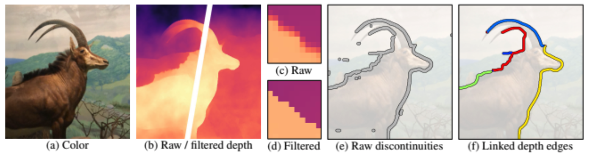
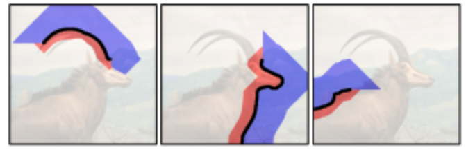

Every now and then, AI researchers come up with more ways to do cool stuff with images. In this post, we will briefly review some interesting technologies in this area. If you are interested, I'll make sure to link Colab notebooks with the code so you can try them yourself without much trouble.
Creating 3D photos
In the paper:
A method for converting a single RGB-D in-
put image into a 3D photo — a multi-layer representation
for novel view synthesis that contains hallucinated color
and depth structures in regions occluded in the original
view.
Every now and then their paper: 3D Photography using Context-aware Layered Depth Inpainting, the authors came up with a very promising idea. Parting from an input image, the model needs to the perform a variety of subtasks to get from an image to a 3D photo.
To do this, each component of the ML model is trained on specific kinds of training data. In simple terms, it is able to detect the depths of the objects in an image, and determines depth edges.
Then, iterating over each of these edges, it considers the context (depth and color) of the background pixels to generate "unknown" pixels. In other words, having the determined the depth maps of the image, the depth discontinuities are the places were the data is extended: the regions of synthesis.
Then, by converting the results into a 3D textured mesh, the technology is able to easily create novel views in the images.
Image taken from “Semantic Image Synthesis with Spatially-Adaptive Normalization” by Taesung Park, Ming-Yu Liu, Ting-Chun Wang, and Jun-Yan Zhu. An example showing the power of normalization layers for image synthesis applications.
The fourth leg didn't appear though ;).
Interestingly, the 3D results themselves can be rendered by common graphic engines.
pretty sure that the technology will definitely help to bring 3D photography into the mainstream, not If you are interested, run it by yourself by going to this notebook.